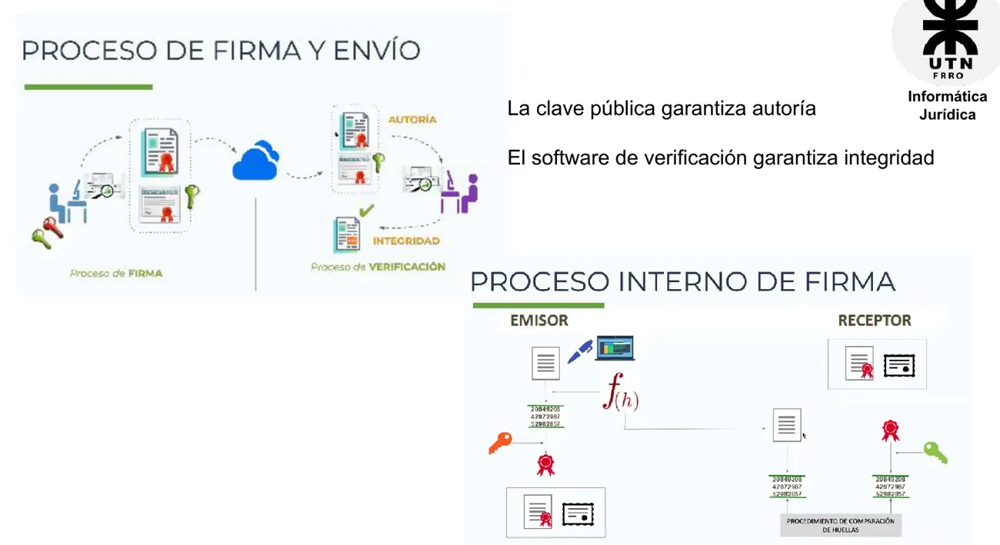
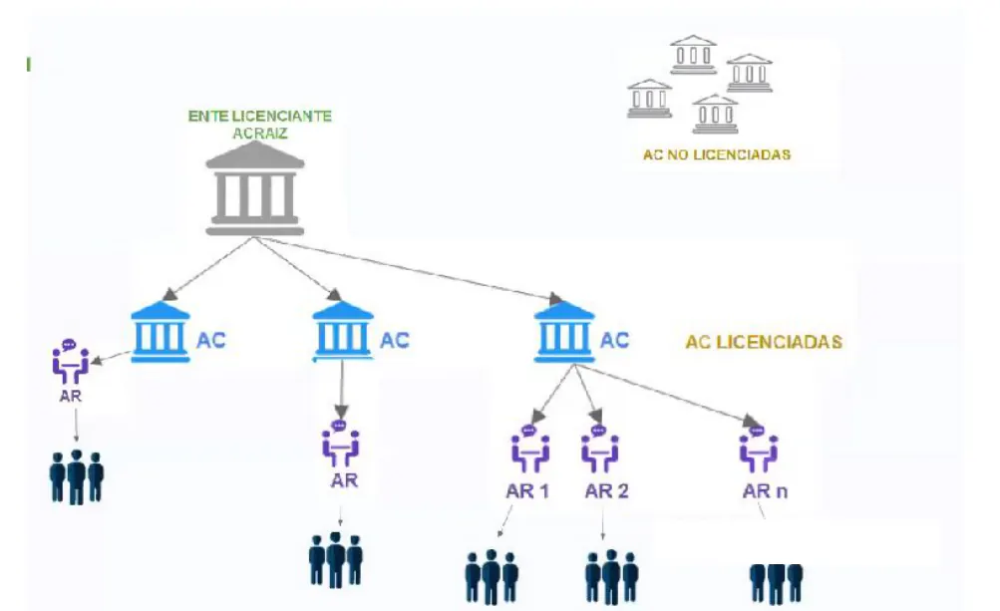

Eje 2: firma electrónica y digital
Qué prueba una firma, en qué se diferencian la electrónica y la digital, cómo funcionan las claves y quién da fe de ellas.
Resumen no juzgado. Todavía nadie evaluó si alcanza para estudiar solo con esto.
La base es la presentación «3 - Firma Digital» de 2026. Las páginas sin otra aclaración son de ese archivo.
Qué es una firma
Hay dos definiciones en el material (pág. 3).
- «Nombre y apellidos escritos por una persona de su propia mano en un documento, con o sin rúbrica, para darle autenticidad o mostrar la aprobación de su contenido» (RAE).
- «Trazo, título o gráfico que un individuo escribe a mano sobre una documentación con la intención de conferirle validez o de expresar su conformidad».
Hay tres tipos: ológrafa, electrónica y digital. Sus fines son cuatro (pág. 4): identificatorios, de autoría, de conformidad y de eficacia jurídica.
Para qué se firma
ARTICULO 288 del CCC. Firma
La firma prueba la autoría de la declaración de voluntad expresada en el texto al cual corresponde. Debe consistir en el nombre del firmante o en un signo. En los instrumentos generados por medios electrónicos, el requisito de la firma de una persona queda satisfecho si se utiliza una firma digital, que asegure indubitablemente la autoría e integridad del instrumento.
Presentación «3 - Firma Digital», 2026, pág. 5
ARTICULO 257 del CCC. Hecho jurídico
El hecho jurídico es el acontecimiento que, conforme al ordenamiento jurídico, produce el nacimiento, modificación o extinción de relaciones o situaciones jurídicas.
Presentación «3 - Firma Digital», 2026, pág. 5
En criollo
Firmar es atarte a un texto. El art. 288 te dice dos cosas que después vuelven en todo el eje: quién lo dijo (autoría) y que el texto es ese y no otro (integridad). Y para un documento electrónico nombra solo a la firma digital.
Qué se firma: documentos
Un documento representa algo, como un hecho jurídico (por ejemplo, un contrato). Ver art. 286 del CCC. Documento equivale a instrumento. Dentro de los instrumentos privados están los particulares (pág. 8):
- Firmados, como un contrato de alquiler.
- No firmados, como una grabación de Zoom.
Documento digital
Documento cuyo soporte material es algún tipo de dispositivo electrónico y cuyo contenido está codificado y puede ser leído o reproducido por aplicaciones de software.
Presentación «3 - Firma Digital», 2026, pág. 17
Sus características (pág. 18):
- Puede haber disociación entre contenido y representación.
- Se accede desde distintos dispositivos y aplicaciones.
- El soporte físico es diferente.
- El formato es abierto o propietario.
- Funcionalmente es hipertextual, interactivo, mutable, volátil y multimediático.
- Permite pasar de soporte digital a papel y viceversa.
Internet potencia el intercambio de estos documentos. De ahí la pregunta por su valor jurídico y probatorio (págs. 19 y 20).
Los tres tipos de firma
La ológrafa es la de puño y letra. Cumple con las características de arriba. La presentación deja planteada la pregunta por sus problemas (pág. 7), sin responderla en la diapositiva.
Firma electrónica
Datos electrónicos que se vinculan con determinada información del firmante.
Presentación «3 - Firma Digital», 2026, pág. 9
Firma digital
Una firma digital es el resultado de aplicar a un documento digital un procedimiento matemático que requiere información de exclusivo conocimiento del firmante.
Presentación «3 - Firma Digital», 2026, pág. 10
Las dos identifican al firmante y dan fe de su voluntad. La diferencia está en lo que la ley presume.
Particularidades de la firma digital (pág. 11):
- Representa la identidad de una persona.
- Es una firma convencional, pero en formato electrónico.
- Tiene la misma validez legal que una firma convencional.
Firma digital como procedimiento
Procedimiento que aporta a los documentos electrónicos las mismas propiedades que tienen los documentos firmados en papel y que es verificable por terceras partes.
Presentación «3 - Firma Digital», 2026, pág. 21
Electrónica contra digital
| Firma digital | Firma electrónica | |
|---|---|---|
| Valor | Idéntico valor que la firma manuscrita | No tiene idéntico valor que la manuscrita |
| Naturaleza jurídica | Equivalente absoluto a la firma ológrafa | Instrumento particular no firmado |
| Autoría | Se presume verdadera. Presunción legal iuris tantum, a favor del titular. Quien la cuestione tiene que presentar pruebas | No se presume verdadera. Hay que probarla |
| Integridad | Se presume íntegra. Se asume legalmente inalterado | No se presume íntegra. Hay que probarlo |
| Repudio | No repudio garantizado mediante infraestructura PKI | Desconocimiento o repudio legalmente posible |
Fuente: esta presentación, pág. 13, y «4 - Contratos Electrónicos», 2026, pág. 5.
La pág. 13 separa dos situaciones, cuestionar la firma o cuestionar el documento. Así lo dice la diapositiva.
- Firma electrónica. «No se presume verdadera: si alguien niega o desconoce una firma electrónica, es el firmante quien debe probar que la firma es auténtica». «No se presume íntegra: si alguien no cuestiona la firma, pero sí el documento, también es el firmante quien deberá presentar las pruebas que acrediten su contenido».
- Firma digital. «Se presume verdadera, lo que quiere decir que quien cuestione su validez tendrá que presentar pruebas». «Se presume íntegra, si alguien no cuestiona la firma, pero sí el documento, también tendrá que presentar pruebas».
Quién prueba la firma electrónica
Las dos diapositivas de 2026 no dicen lo mismo. «3 - Firma Digital» (pág. 13) dice que es «el firmante quien debe probar que la firma es auténtica». «4 - Contratos Electrónicos» (pág. 5) dice que «debe ser probada por quien la invoca». Consultá con la cátedra cuál espera en el examen.
En criollo
La firma digital da vuelta la carga de la prueba. Si te llega un contrato con firma digital y decís «yo no firmé», tenés que demostrarlo vos. Si te llega con firma electrónica y decís lo mismo, la otra parte no tiene esa ventaja. La firma no se da por buena sola.
Una firma digital garantiza, según la cátedra (pág. 11):
- Presunción de autoría.
- Presunción de integridad.
- Confidencialidad.
- Principio de no repudio.
Confidencialidad
La lista la incluye, pero la misma presentación aclara de dónde sale. «La encriptación con la clave pública permite lograr la confidencialidad» (pág. 26). Autoría e integridad dependen de la firma y su verificación (pág. 29).
Beneficios (págs. 12 y 22): eficiencia y rapidez, trabajo en entornos virtuales, mejor experiencia de compra o contratación, ahorro de costos, seguridad jurídica y beneficios medioambientales. También firmar a cualquier hora y desde cualquier lugar, y acceso simultáneo a originales.
Original y copia (pág. 21). Un documento electrónico firmado es original. Si se imprime, es copia. Puede haber más de un original.
Marco jurídico
- Ley 25.506 y decreto 2628/02.
- Ley 27.446/2018 y sus modificatorias.
- Ley provincial de Santa Fe 1249/04 y decreto 1573/08, tal como figuran en la presentación.
Fuente: pág. 14.
Ley 25.506
Sancionada el 14 de noviembre de 2001. Promulgada de hecho el 11 de diciembre de 2001.
| Artículo | Tema (pág. 15) |
|---|---|
| 1 | Objeto |
| 2 | Definición de firma digital |
| 3 | Equipara la firma digital con la firma ológrafa |
| 5 | Definición de firma electrónica |
| 6 | Definición de documento electrónico |
| 7 | Autoría |
| 8 | Integridad |
| 9 | Validez |
| 10 | Remitente |
| 11 | Original |
| 12 | Conservación |
La presentación da los temas, no el texto. La ley está enlazada en la pág. 14.
Cómo funciona por dentro
Criptografía: práctica y estudio de técnicas para codificar un mensaje haciéndolo ininteligible y recuperar el mensaje original a partir de esa versión ininteligible (pág. 23). Hay muchas técnicas. La que usa la firma digital es la tecnología de clave pública, o asimétrica.
Clave pública y clave privada (PKI)
- Las claves se generan con un algoritmo matemático altamente seguro.
- Se usa criptografía de curva elíptica (ECC), Rivest-Shamir-Adleman (RSA) y Diffie-Hellman.
- La clave privada es equivalente a la clave secreta de la criptografía simétrica.
- Lo que se cifra con una clave se descifra con la otra, y viceversa.
| Pieza | Qué es (pág. 26) |
|---|---|
| Clave privada | Bajo exclusivo control del firmante. Permite aplicar la firma a un documento electrónico |
| Clave pública | Se puede distribuir para que terceros verifiquen lo firmado con la privada asociada |
| Token | Dispositivo criptográfico seguro que almacena las claves |
En criollo
Pensá en un candado raro con dos llaves. Lo que cerrás con una solo lo abre la otra. Si cerrás con tu llave privada, cualquiera con tu pública puede abrirlo, y eso demuestra que lo cerraste vos.
Firmar y verificar

La diapositiva lo muestra así (pág. 29).
- El emisor aplica una función de hash al documento y obtiene una huella.
- Firma esa huella con su clave privada.
- Manda el documento firmado junto con el certificado.
- El receptor recalcula la huella del documento.
- Con la clave pública obtiene la huella que firmó el emisor.
- Compara las dos huellas.
La cátedra lo resume en dos renglones. La clave pública garantiza autoría. El software de verificación garantiza integridad.
Certificado digital
Da fe de la vinculación entre una clave pública y una persona o entidad (pág. 28). Sin él, nadie sabría de quién es la clave.
- Es un documento digital.
- Lo emite un organismo autorizado.
- Se entrega previa autenticación de la identidad de la persona.
- Contiene información del titular.
- Está firmado digitalmente por el organismo autorizado.
- Contiene información del organismo que firma.
Dónde se almacena (pág. 30):
| Lugar | Detalle |
|---|---|
| Navegador | Almacenamiento directo |
| Token | Portable, móvil, interfaz USB, sin lector especial pero con drivers |
| SmartCard | Igual que el token, pero necesita lector especial |
| HSM | Para autoridades certificantes. También genera claves |
Revocación (pág. 31). Se revoca cuando la clave está en riesgo, cuando cambia la condición del certificado, por fallecimiento del titular, por declaración judicial de incapacidad y en los demás casos que propone la ley.
El estado se consulta con el protocolo online OCSP, de formato petición y respuesta. Una petición puede consultar varios certificados y puede ir firmada o no. La respuesta del servidor OCSP debe estar firmada.
Infraestructura

| Actor | Qué hace (pág. 34) |
|---|---|
| Ente Licenciante | Raíz del esquema de confianza. Habilita a las AC otorgando una licencia, les emite certificados y controla la seguridad y la operatividad de toda la infraestructura |
| Autoridad Certificante (AC) | Constata la identidad del solicitante, emite certificados digitales, firma digitalmente y tiene autoridades de registro |
| Autoridad de Registro (AR) | Valida identidad y datos del solicitante y suscriptores, revoca certificados, archiva y conserva la documentación |
La pág. 32 nombra AC-Raíz, AC-ONTI y AC-Modernización, y dos servicios, firma con token por hardware y firma remota sin token. El árbol también muestra «AC no licenciadas», fuera de la raíz (pág. 33).
Plataforma de Firma Digital Remota (PFDR)
Servicio en la nube, sin token y con HSM. Solo para PDF. Se accede desde cualquier dispositivo con internet. Pide un código OTP generado por una app en el celular. No permite firma masiva (pág. 35).
Tipos de certificado
Persona física, persona jurídica, aplicaciones, sellos de tiempo y sellos de competencia (pág. 35).
Dónde se usa
Facility services, inmobiliarias, aseguradoras, recursos humanos, equipos comerciales y departamentos legales. Por ejemplo, contratos laborales, de arrendamiento, pólizas, órdenes de compra y actas de consejo (pág. 36).
En la Justicia (pág. 37):
- Notificación por correo electrónico firmado digitalmente, respetando el debido proceso.
- Presentaciones judiciales: demandas, denuncias, oficios, notificaciones.
- Audiencias por medios electrónicos.
- Capacitaciones.
Las consignas del TP de firma están en Ejercicios y TP.
Quiz del eje 2
Elegí una opción para ver la explicación. Las que dicen «Se tomó» salieron de exámenes reales.
- 1
Según el art. 288 del CCC, ¿qué prueba la firma?
El artículo también aclara que en instrumentos electrónicos el requisito se cumple con una firma digital.
- 2
Si alguien cuestiona la validez de una firma digital, ¿qué pasa según la cátedra?
La firma digital se presume verdadera. Por eso la carga recae en quien la cuestiona.
- 3
¿Cuál es la naturaleza jurídica de la firma electrónica según la presentación de contratos 2026?
Las opciones de equivalencia y de presunción corresponden a la firma digital.
- 4
¿Qué artículo de la Ley 25.506 equipara la firma digital con la ológrafa?
El art. 2 define la firma digital, el 5 la electrónica y el 3 hace la equiparación.
- 5
¿Qué es la clave privada?
La pública se distribuye y el token es el dispositivo.
- 6
Según la cátedra, ¿qué garantiza el software de verificación?
La diapositiva dice que la clave pública garantiza autoría y el software de verificación, integridad.
- 7
¿De qué da fe un certificado digital?
Por eso lo emite un organismo autorizado, previa autenticación de la identidad.
- 8
¿Para qué sirve el protocolo OCSP?
Aparece en la diapositiva de revocación: formato de petición y respuesta, con respuesta firmada.
- 9
¿Quién es la raíz del esquema de confianza?
El Ente Licenciante habilita a las AC otorgando una licencia y les emite certificados.
- 10
¿Qué es cierto de la firma digital remota (PFDR)?
Es un servicio en la nube, sin token y con HSM, que necesita internet y no permite firma masiva.
Todavía no respondiste ninguna.